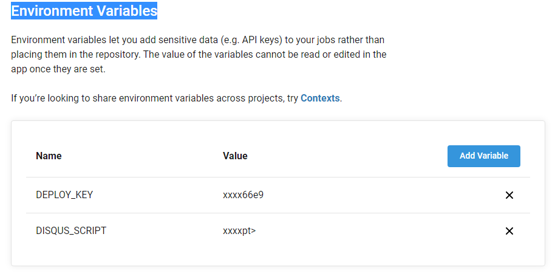
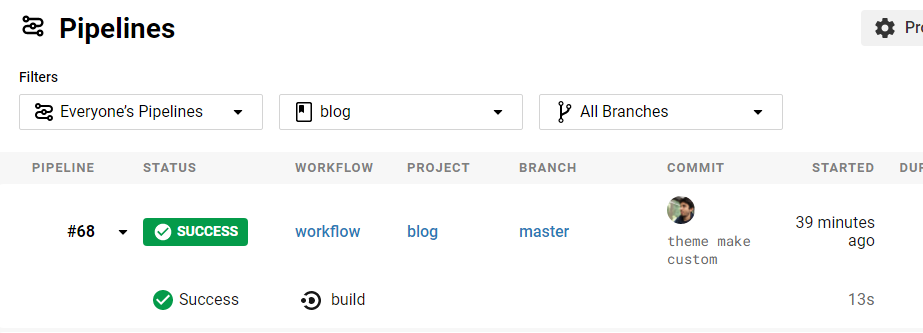

3 minutes
Hugo Github ve CircleCI ile github-pages sayfasi olusturmak-[2]
Yazinin ilk kisminda blog reposunu olusturduk simdi CircleCI ile baglantisina bakalim. Burda CircleCI baska alternatifler de uygulanabilinir. Amac bir pipeline yapisi olusturmak ve anlamak .
https://circleci.com/vcs-authorize/ sayfasinda Github ile login olalim , ilerki ekranda github baglanmaya calisacak ve izin isteyecek verelim.
- Add project ile projemizi sectikten sonra altaki gibi bir ekran cikicak bu ekranda bazi projeler icin hazir template yapilar var biz hello-world olani secelim .

- blog reposuna daha once bu islemi yaptigim icin baska bir repo sectim .. Usteki adimi yaptiktan sonra Pull Request istegi olusturup onaylamamiz gerek https://github.com/turgayh/JavaScript-Algorithm/pull/1 ornek PR istegine bu linkten bakabilirsiniz.
- Hersey tamam artik . repomuzun root dizininde yer alan .circleci klasoru altinda config.yml dosyasi acalim ve icerigi temizleyelim ..
version: 2
jobs:
build:
docker:
- image: felicianotech/docker-hugo
working_directory: ~/project- Hugo frameworkun docker image iceren project directory ile bir calisma ortami
steps:
- checkout
- run:
name: "Run Hugo"
command: |
git submodule add https://github.com/turgayh/hugo-theme-hello-friend-ng.git themes/hello-friend-custom
hugo -D
ls ./public- blog reposu icersine submodule olarak temamizi ekleyelim.Burda hello-friend-custom dikkat edelim burasi degistirilebilir. Ben tema ana projeden forklayip submodule olarak onu kullandigimdan ismini degistirdim haliyle config.toml icersindeki tema ismi de degisecek.
- hugo ile blog reposunu derleyip public isminde ciktinin olusup olusmadigi kontrol edilir
- run:
name: "Clone Website"
command: |
if [ "${CIRCLE_BRANCH}" == "master" ]; then
mkdir www
cd www
git clone https://github.com/turgayh/turgayh.github.io.git
cd turgayh.github.io
rm -r *
cp -r ../../public/* ./
ls -la
fi- www dizini icersine github-pages sayfasi alinir ve icerigi silinir yeni icerik olarak bi onceki adimda olusturulan public icersinde dosyalar eklenir
- run:
name: "Update Website"
command: |
if [ "${CIRCLE_BRANCH}" == "master" ]; then
git config --global user.email "turgayh@itu.edu.tr"
git config --global user.name "turgayh"
cd ./www/turgayh.github.io
git add .
git commit -m "Circle CI Update Website | Build Number:${CIRCLE_BUILD_NUM}"
git push -q https://${DEPLOY_KEY}@github.com/turgayh/turgayh.github.io.git master
fi- github-pages icersi guncellendi ve bunu commit etmemiz gerek bunu yine CircleCI ile yapicagiz usteki kod parcaciklarinda ${DEPLOY_KEY} parametresi istenilen github projesinde ozel olarak uretilip circCI icersine parametre olarak verilmelidir .
- ${DEPLOY_KEY} degeri github sayfasinda settings>Personal Access Token > Generate Token ile olusturulur.
- olusturulan token CircleCI icersinde Environment Variables alanina eklenir

- blog reposu hazir artik pushlanir ve circleCI uzerinden build olacak mi diye kontrol edebilirsiniz . 
config.yml
version: 2
jobs:
build:
docker:
- image: felicianotech/docker-hugo
working_directory: ~/project
steps:
- checkout
- run:
name: "Run Hugo"
command: |
git submodule add https://github.com/turgayh/hugo-theme-hello-friend-ng.git themes/hello-friend-custom
hugo -D
ls ./public
- run:
name: "Clone Website"
command: |
if [ "${CIRCLE_BRANCH}" == "master" ]; then
mkdir www
cd www
git clone https://github.com/turgayh/turgayh.github.io.git
cd turgayh.github.io
rm -r *
cp -r ../../public/* ./
ls -la
fi
- run:
name: "Update Website"
command: |
if [ "${CIRCLE_BRANCH}" == "master" ]; then
git config --global user.email "turgayh@itu.edu.tr"
git config --global user.name "turgayh"
cd ./www/turgayh.github.io
git add .
git commit -m "Circle CI Update Website | Build Number:${CIRCLE_BUILD_NUM}"
git push -q https://${DEPLOY_KEY}@github.com/turgayh/turgayh.github.io.git master
fiGithubCircleCIAutomationPiplineHugo FrameworkGo LanguageBlog
468 Words
2020-07-12 11:23 +0000
4f9306a @ 2020-07-12
comments powered by Disqus